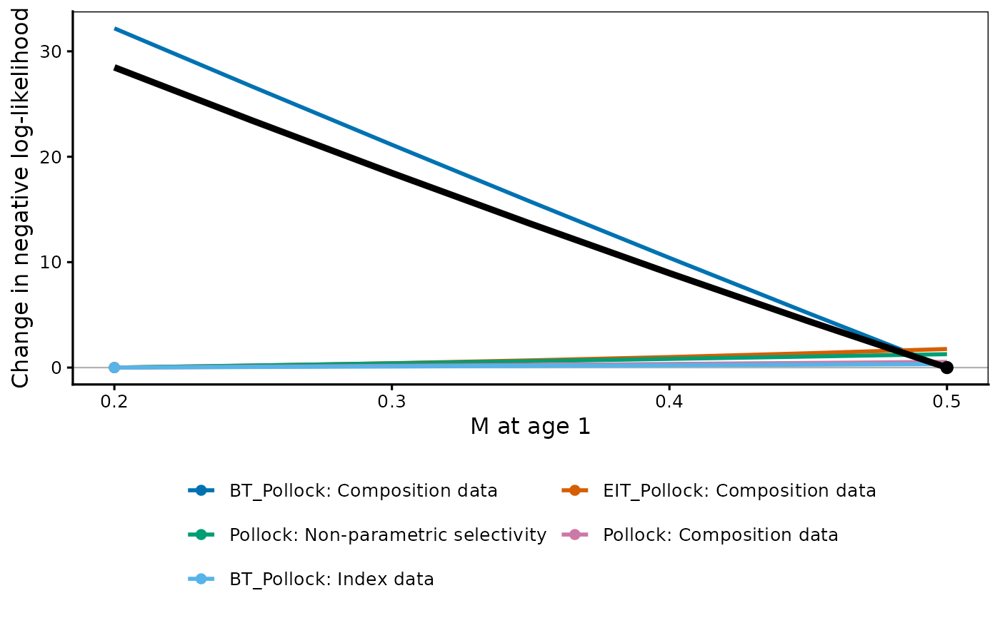
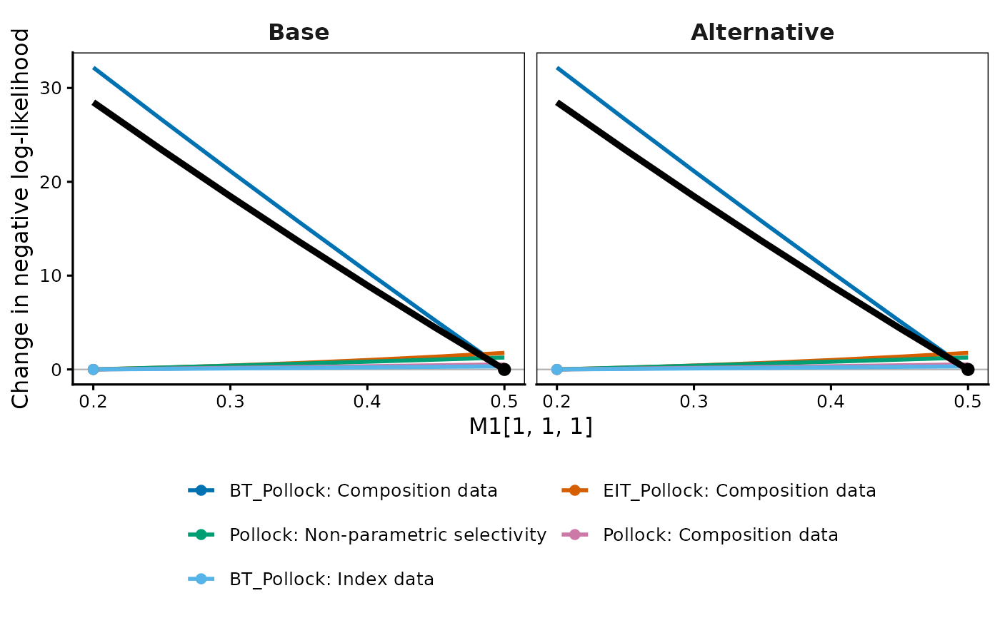

Draws each negative log-likelihood component against the
profiled parameter, with the total overlaid, in the style of
r4ss::SSplotProfile(). Where the curves disagree about which value of the
parameter they prefer, the data sources are in conflict – which is what
the total on its own cannot show.
Usage
plot_profile(
Rceattle_profile,
model_names = NULL,
weighted = TRUE,
relative = c("own", "minimum", "none"),
minfraction = 0.01,
add_cutoff = FALSE,
cutoff = 1.92,
xlab = NULL,
ylab = NULL,
line_col = NULL,
lwd = 3,
lty = 1,
file = NULL,
width = 7,
height = 5
)Arguments
- Rceattle_profile
A single
"Rceattle_profile"fromprofile.Rceattle(), or a list of them to compare models in facets (e.g. the same profile run on two model configurations).- model_names
Legend labels for the models.
- weighted, relative, minfraction
Passed to
profile_components().minfractiondefaults to0.01here, as inr4ss::SSplotProfile().- add_cutoff
Draw a horizontal line at
cutoff. Off by default: the cutoff is a statement about the total, and drawing it across the components invites reading it as one about them.- cutoff
Height of that line. Default
1.92, the 95% profile-likelihood cutoff for one parameter, \(\chi^2_1(0.95)/2\).- xlab
X-axis label. Default names the profiled parameter and cell in the units the grid is in.
- ylab
Y-axis label. Default follows
relative.- line_col
Line colours; names, hex, or base-graphics integers.
NULLuses the colorblind-safe Okabe-Ito palette. Applied to whichever variable the figure separates by colour, in legend order. Too few colours are recycled, with a warning.- lwd
Line width on the base-graphics scale: the default
3renders as a standard-weight ggplot line. A vector varies it across series.- lty
Line type. A vector varies it across the levels of whatever the figure separates by line type.
- file
Optional file stem; the figure is written to
<file>_<suffix>.pngif given.- width, height
Saved figure size in inches.
Value
A ggplot object. Its $data is the plotted frame, so the numbers
behind the figure can be read back off it.
Details
Read the figure by where each curve bottoms out, not by how deep it is. Every
series is re-zeroed at its own minimum (relative = "own") and a point marks
that minimum, so the spread of the points along the x axis is the
disagreement: components whose points sit together support the same value,
and a component whose point sits far from the total's is pulling against the
rest. relative = "minimum" instead re-zeroes every series at the total's
minimum, which shows what each component gives up by moving away from the
fitted value.
The total is drawn in black, heavier than the components, and is kept out of
the colour legend so the palette separates only the components being
compared. Components whose change over the grid is under minfraction of the
total's are dropped: they are flat on this scale and would only crowd the
legend. Non-converged grid points leave a gap in the curve.
line_col, lwd and lty apply to the components. The total is drawn
solid and black at 1.6 times lwd, so that it stays the reference line
whatever the components are styled as. Series are ordered, in the legend and
in the palette, by how much each moves over the grid.
Under random_rec = TRUE the total is the Laplace-approximated marginal
likelihood while the components are the inner joint negative
log-likelihood, so they will not sum; profile_components() says so when
they differ. The shapes are still comparable.
References
Taylor, I.G., et al. (2021) Beyond visualizing catch-at-age models: Lessons learned from the r4ss package about software to support stock assessments. Fisheries Research 239: 105924.
See also
profile_components() for the same numbers as a data frame,
profile.Rceattle() to run the profile, print.Rceattle_profile() for
whether the grid brackets the minimum.
Examples
# \donttest{
data(BS2017SS)
ss_run <- fit_mod(data_list = BS2017SS, inits = NULL, file = NULL,
estimateMode = 0, random_rec = FALSE, msmMode = 0, avgnMode = 0,
phase = FALSE, verbose = 0)
#> Warning: Passing ‘phase’, ‘verbose’ directly to fit_mod() is deprecated and will be removed in a future release. Bundle these into fit_control() instead, e.g. fit_control(phase = ..., verbose = ...). Forwarding for now.
#> `age_trans_matrix` data does not span range of age for species 1 will fill with 0s
# Profile M for species 1 and see which data sources disagree about it
prof <- profile(ss_run, param = "M1", slots = list(c(1, 1, 1)),
values = list(seq(0.2, 0.5, by = 0.05)))
plot_profile(prof, xlab = "M at age 1")

# Two model configurations side by side
plot_profile(list(prof, prof), model_names = c("Base", "Alternative"))

# }